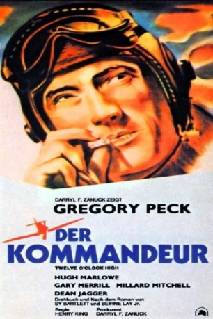
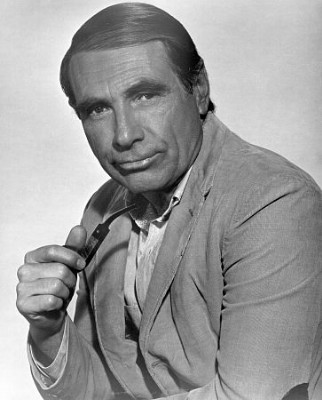
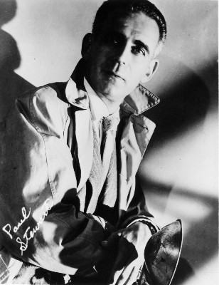
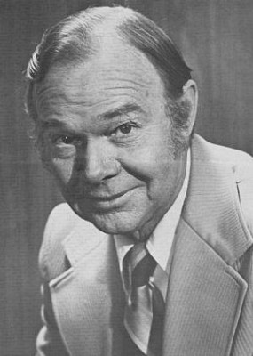
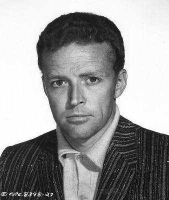
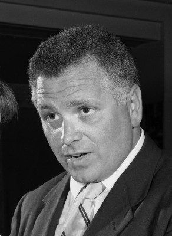
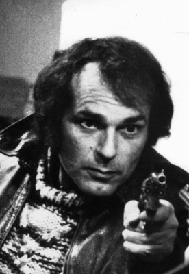
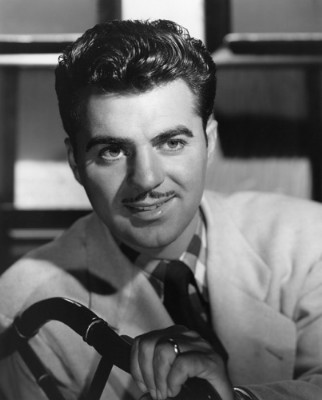

#4563 Der Kommandeur
Alternativ: Twelve O'Clock High
Auszeichnungen: 2 Oscars gewonnen für 2 Oscars nominiert
 
 IMDB-Wertung: 7.8 / 10
IMDB-Wertung: 7.8 / 10  Metascore: 0
Metascore: 0 
Harvey Stovall besucht während eines England-Aufenthaltes den alten amerikansichen Militärflugplatz Archbury. Jetzt sind die Rollbahnen mit Gras überwachsen, aber Stovalls Erinnerungen sind noch frisch. Es ist das 1942. Die 918. Bomber-Gruppe, die täglich mehere Feindeinsätze fliegt, hat zuenehmend höhere Verluste. Die Mannschaft ist demoralisiert und droht zu zerbrechen. Als nach einem Feindlug fünf Flugzeuge mit insgesamt 50 Besatzungsmitgliedern nicht wieder zurückkehren, wird Colonel Davenport des Kommandos enthoben, Brigade-General Savage übernimmt den Befehl über die 918. Gruppe. Savage versucht, sich mit eiserner Disziplin Respekt zu verschaffen, schreckt auch vor drakonischen Maßnahmen nicht zurück.
Jahr: 1949
Dauer: 132 Minuten
FSK: 16
Land: USA Studio: Twentieth Century-Fox Film CorporationTonspuren: DTS - ,
Untertitel: Deutsch,
Auflösung: 1080p (1440x1080) Größe: 10065 MB
Genre: Drama, Krieg
Regisseur: Henry King
Drehbuch: Cheo Hodari Coker
Soundtrack:
Darsteller:
 Gregory Peck als General Savage
Gregory Peck als General Savage Hugh Marlowe als Lt. Col. Ben Gately
Hugh Marlowe als Lt. Col. Ben Gately-  Gary Merrill als Col. Davenport
- Millard Mitchell als General Pritchard
 Dean Jagger als Major Stovall
Dean Jagger als Major Stovall Robert Arthur als Sgt. McIllhenny
Robert Arthur als Sgt. McIllhenny-  Paul Stewart als Capt. 'Doc' Kaiser
-  Sam Edwards als Birdwell
-  William Bryant als Radio Operator , uncredited
- Steve Clark als Clerk in Antique Shop , uncredited
- Russ Conway als Operations Officer , uncredited
-  Bert Freed als Officer Standing at Bar , uncredited
-  Don Gordon als First Patient in Base Hospital , uncredited
- Barry Jones als Lord Haw-Haw , uncredited
 Harry Lauter als Radio Officer , uncredited
Harry Lauter als Radio Officer , uncredited-  Paul Picerni als Bombardier , uncredited
 Kenneth Tobey als Sgt. Keller - Guard at Gate , uncredited
Kenneth Tobey als Sgt. Keller - Guard at Gate , uncredited- John Kellogg als Major Cobb
 Robert Patten als Lt. Bishop
Robert Patten als Lt. Bishop- Lee MacGregor als Lt. Zimmerman
- Roger Anderson als Interrogation Officer
- Robert Blunt als Officer , uncredited
- Campbell Copelin als Mr. Britton , uncredited
- Leslie Denison als RAF Officer , uncredited
 Lawrence Dobkin als Capt. Twombley , uncredited
Lawrence Dobkin als Capt. Twombley , uncredited- George Edwards als Officer , uncredited
- Robert Fisher als Savage's Co-Pilot , uncredited
- Stanley Fraser als Cab Driver , uncredited
- Greg Gallagher als Officer , uncredited
- Don Gaudagno als Dwight - Hospital Patient , uncredited
- Don Giovanni als Cobb's Co-Pilot , uncredited
- Don Hicks als Lt Wilson , uncredited
- Ray Hyke als Corporal Bartender at Officer's Club , uncredited
- Joyce Mackenzie als Nurse , uncredited
- Mike Mahoney als Corporal , uncredited
- John McKee als Operations Officer , uncredited
- Peter Ortiz als Weather Observer , uncredited
- Nelson Scott als Gately's Co-Pilot , uncredited
- William Short als Lt. Pettinghill , uncredited
- John Shulick als Navigator , uncredited
- Bob Tidwell als Bishop's Co-Pilot , uncredited
 Guy Way als Barman , uncredited
Guy Way als Barman , uncredited- Patrick Whyte als Clerk , uncredited
- John Zilly als Sgt. Ernie - Gen. Savage's Driver , uncredited
Datei: X:\1900-1949\Kommandeur, Der (1949, FSK16, 1440x1080).mkv seit 14.10.2016
Festplatte: HD 1900-1970
 Es gibt insgesamt 80 Filme in der Gruppe '1900-1949'
Es gibt insgesamt 80 Filme in der Gruppe '1900-1949'